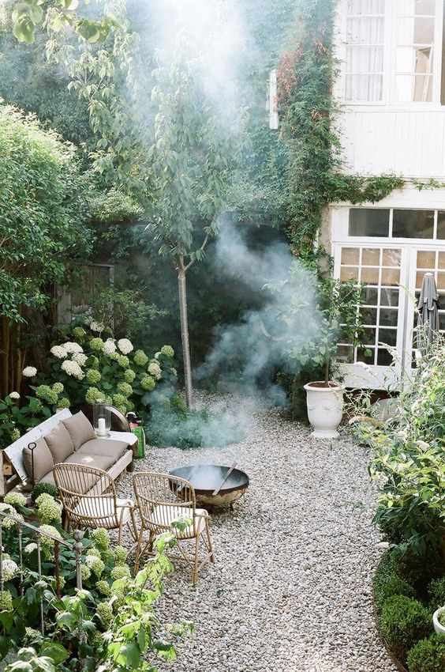
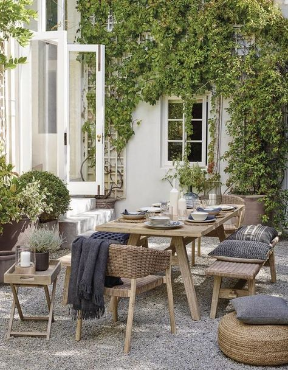
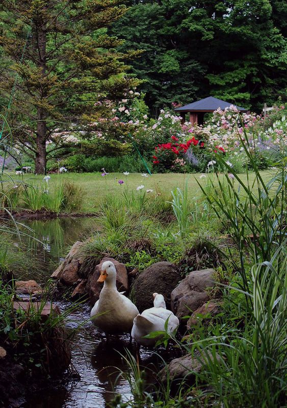
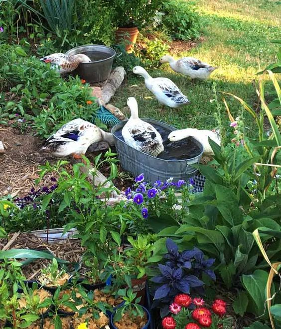
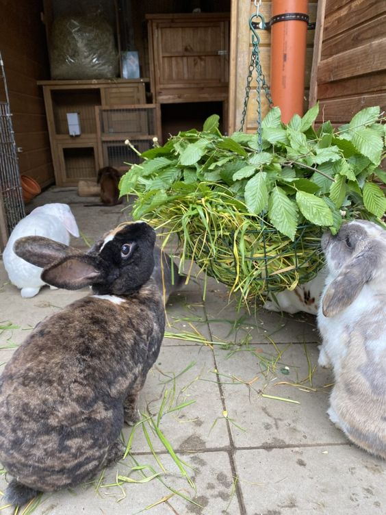
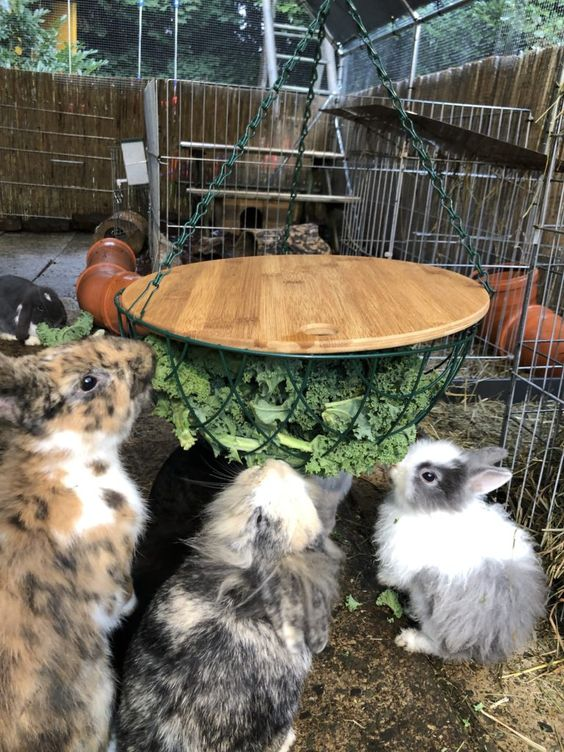
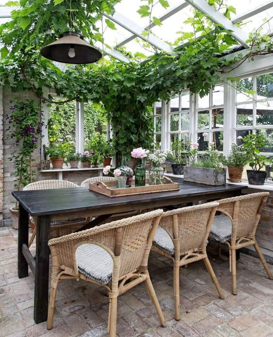
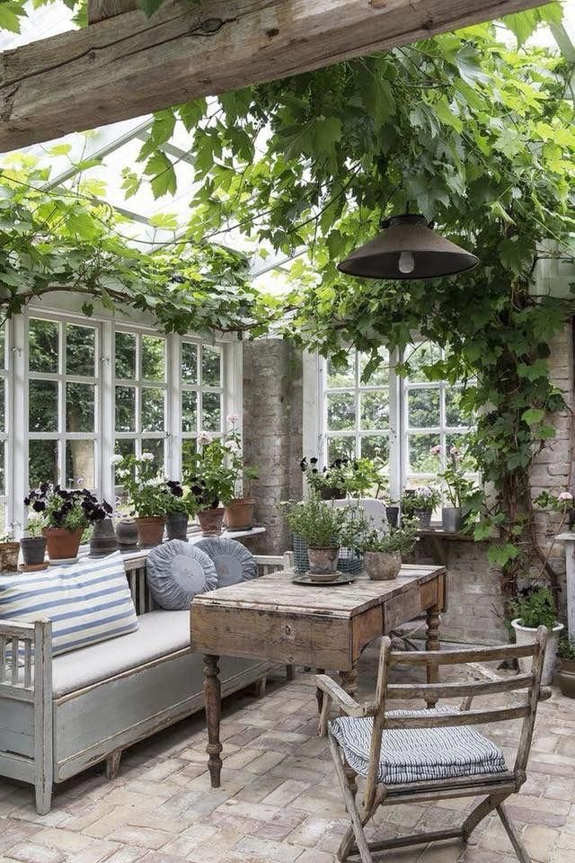
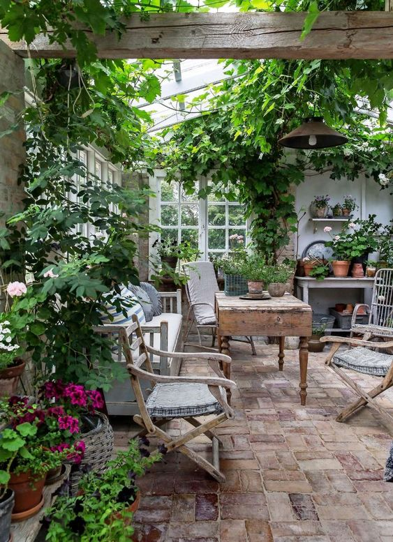

Unser Garten:
- Zu unserem Garten zählt eine kleine Wiese mit vielen Wildblumen, ein kleines Gemüse - und Kräuterbeet, sowie einem Hasenstall.
- Außerdem haben wir eine offene Terasse, die im Sommer viel Sonne abbekommt.
- An unserem Grillplatz wird es vorallem abends sehr gemütlich und wir bieten bei ausreichender Nachfrage auch häufig Stockbrot und Smores an.Das Feuer brennt natürlich jeden Abend.
- Außerdem gibt es für die regnerischeren Tage einen überdachten Bereich, der warm und trocken bleibt, sich jedoch wie draußen anfühlt.